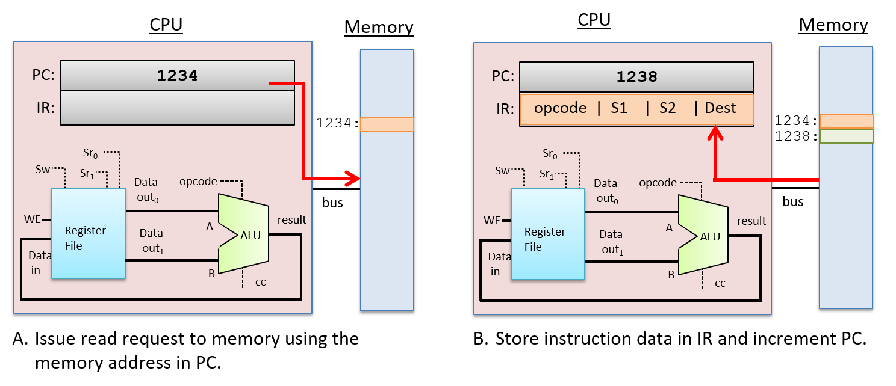

Gate and Circuit#
Relevant Reading
This lecture will cover sections 5.1 through 5.4 from Chapter 5 of the book.
1. In the beginning …#
computer=the one who computes
Origin of modern computing architectures#
Jacquard Loom
Charles Babbage’s Analytical Machine
Hollerith Census Machine (eventually becomes IBM)
ENIAC: First computer
Modern computer architecture#
von Neuman architecture
General purpose
A binary computer instead of a decimal computer
Stored-program
2. Logic Gates#
Building blocks of the digital circuitry that implements arithmetic, control, and storage functionality in a digital computer.
Logic gates are created from transistors that are etched into a semiconductor material (e.g. silicon chips).
Transistors act as switches that control electrical flow through the chip. A transistor can switch its state between on or off (between a high or low voltage output). Its output state depends on its current state plus its input state (high or low voltage).
2.1 Basic Logic Gates#
AND, OR, and NOT form a set of basic logic gates from which any circuit can be constructed.
Truth table for AND, OR, and NOT
A |
B |
A AND B |
A OR B |
NOT A |
NOT B |
|---|---|---|---|---|---|
0 |
0 |
0 |
0 |
1 |
1 |
0 |
1 |
0 |
1 |
1 |
0 |
1 |
0 |
0 |
1 |
0 |
1 |
1 |
1 |
1 |
1 |
0 |
0 |
2.2 Electronic Circuit#
Transistors
Electrical currents activate/deactivate other current flows.
Example of AND gate
2.3 Other gates#
Truth table for AND, OR, and NOT
A |
B |
A NAND B |
A NOR B |
A XOR B |
|---|---|---|---|---|
0 |
0 |
1 |
1 |
0 |
0 |
1 |
1 |
0 |
1 |
1 |
0 |
1 |
0 |
1 |
1 |
1 |
0 |
0 |
0 |
3. Circuits#
Core functionality of the architecture
Instruction Set Architecture (ISA)
Categories
Arithmetic/logic
Control
Storage
All three are contained in a standard processor
3.1. Arithmetic: Addition#
Binary addition
Mathematical operations:
Bit-wise with carry
\(0 + 0 = 0\)
\(0 + 1 = 1\)
\(1 + 0 = 1\)
\(1 + 1 = 0\) and carry \(1\) to the next bit operation (or add 1 to left of the most significant bit position)
This works for both unsigned and 2’s complement notation
Example 1: 4-bit unsigned \(2+6=8\)
Example 2: 4-bit unsigned \(11+12=23\)
Example 3: 4-bit signed \(5-7=5+(-7)=(-2)\)
Positive to negative conversion in 2’s complement: flipped bit and add 1.
\(7\): \(0111\)
\(-7\): \(1000 + 1=1001\)
\(1110=(-1)*(1)*(8)+(1)*(4)+(1)*(2)+(0)*1=(-8)+4+2=(-2)\)
Unsigned addition
Given
wbits operandsTrue sum can have
w + 1bits (carry bit).Carry bit is discarded.
Implementation:
s = (u + v) mod 2w
Hands on: unsigned addition
Create a file named
unsigned_addition.cwith the following contents:
Compile and run
unsigned_addition.c.Confirm that calculated values are correct.
2’s complement addition
Almost similar bit-level behavior as unsigned addition
True sum of
w-bit operands will havew+1-bit, butCarry bit is discarded.
Remainding bits are treated as 2’s complement integers.
Overflow behavior is different
\(TAdd_{w}(u, v) = u + v + 2^{w}\) if \(u + v < TMin_{w}\) (Negative Overflow)
\(TAdd_{w}(u, v) = u + v\) if \(TMin_{w} \leq u + v \leq TMax_{w}\)
\(TAdd_{w}(u, v) = u + v - 2^{w}\) if \(u + v TMax_{w}\) (Positive Overflow)
Hands on: signed addition
Create a file named
signed_addition.cwith the following contents:
Compile and run
signed_addition.c.Confirm that calculated values are correct.
3.2. Arithmetic: Multiplication#
Multiplication
Compute product of
w-bit numbers x and y.Exact results can be bigger than
wbits.Unsigned: up to
2wbits: \(0 \leq x * y \leq (2^{w} - 1)^{2}\)2’s complement (negative): up to
2w - 1bits: \(x * y \geq (-2)^{2w-2} + 2^{2w-1}\)2’s complement (positive): up to
2wbits: \(x * y \leq 2^{2w-2}\)
To maintain exact results:
Need to keep expanding word size with each product computed.
Is done by software if needed (arbitrary precision arithmetic packages).
Trust your compiler: Modern CPUs and OSes will most likely know to select the optimal method to multiply.
Multiplication and Division by power-of-2
Power-of-2 multiply with left shift
\(u << k\) gives \(u * 2^{k}\)
True product has
w + kbits: discardkbits.
Unsigned power-of-2 divide with right shift
\(u >> k\) gives \(floor(u / 2^{k})\)
Use logical shift.
Signed power-of-2 divide with shift
x > 0: \(x >> k\) gives \(floor(u / 2^{k})\)
x < 0: \((x + (1 << k) - 1) >> k\) gives ceiling \(u / 2^{k}\)
C statement:
(x < 0 ? x + (1 << k) - 1: x) >k
3.3. Negation#
Negation: complement and increase
Negate through complement and increment:
~x + 1 == -x
Challenge
Implement a C program called
negation.cthat implements and validates the equation in slide 24. The program should take in a command line argument that takes in a number of typeshortto be negated.What happens if you try to negate
-32768?
Solution
4. The Processor’s Execution of Program Instructions#
Performed in several stages.
Key stages:
Fetch
Decode
Execute
WriteBack
 https://diveintosystems.org/book/C5-Arch/instrexec.html
https://diveintosystems.org/book/C5-Arch/instrexec.html
PC: Program Counter
IR: Instruction Register
